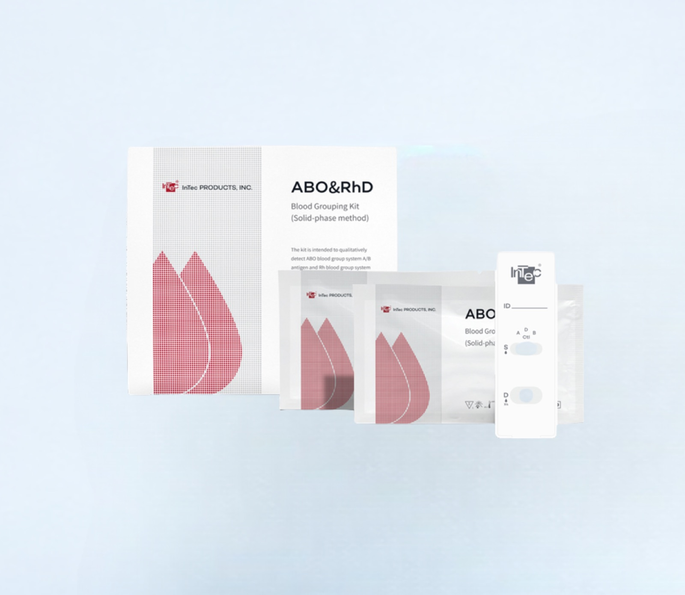
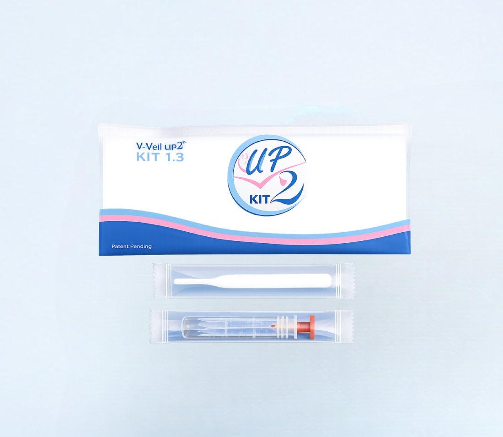
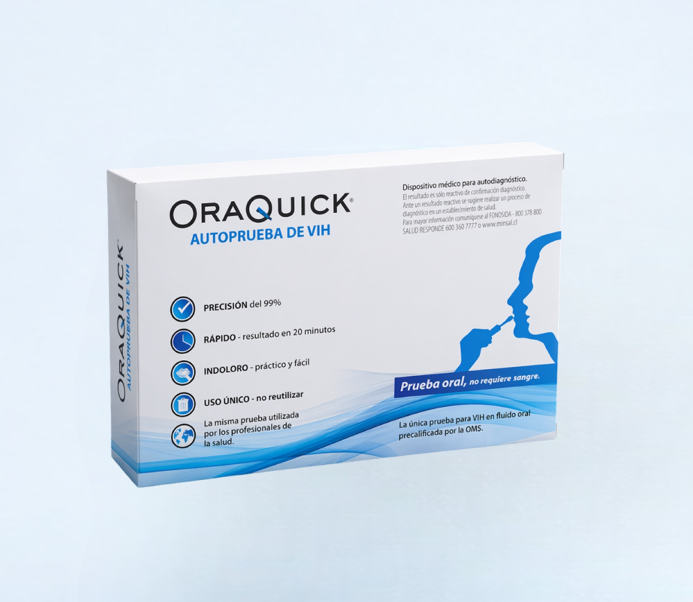

Test Rápidos
Grupo Sanguíneo ABO/RhD
Kit de determinación de grupo sanguíneo por fase sólida.
Ver más
Kit de autotoma de secreciones vaginales y cervicales: un velo vaginal colector desechable (dispositivo médico clase I, desinfectado por UVC) para recolectar muestras destinadas a pruebas de laboratorio, sin intervención de un profesional durante la toma.
Fabricado por V-Veil-Up Production SRL (Rumania). Uso bajo indicación de un profesional de salud, especialmente durante hemorragia, embarazo o tras un síndrome de shock tóxico.
El V-Veil UP2™ Kit 1.3 es un paquete de procedimiento de auto-muestreo utilizado para recoger secreciones, fluidos y sustancias presentes en la cavidad vaginal y el cuello uterino, con fines de diagnóstico mediante pruebas de laboratorio (por ejemplo, cribado de ITS o tipificación de VPH).
El kit incluye un velo vaginal colector V-Veil UP2™ (dispositivo médico de clase I, desinfectado por UVC, no estéril), instrucciones de uso y un tubo Retrofitter UP2 para el traslado seguro de la muestra al laboratorio. El velo permanece en la vagina por 2 minutos y no debe usarse por más de 30 minutos.
Recomendado para su uso en los siguientes entornos:
| Tipo de dispositivo | Velo vaginal colector de autotoma, clase I, no estéril, desinfectado por UVC |
|---|---|
| Contenido del kit | 1 velo V-Veil UP2™ · instrucciones de uso · 1 tubo Retrofitter UP2 |
| Tiempo de permanencia | 2 minutos en cavidad vaginal (máximo 30 minutos) |
| Contraindicaciones | Fiebre o síntomas gripales, antecedente de shock tóxico sin indicación médica, alergia a plásticos, menores sin consentimiento |
| Almacenamiento | Lugar limpio, seco, alejado de fuentes de calor |
| Certificación | Marcado CE (dispositivo médico), normativa de la Unión Europea |
| Fabricante | V-Veil-Up Production SRL, Arges, Rumania |

Kit de determinación de grupo sanguíneo por fase sólida.
Ver más
Autodiagnóstico de VIH en fluido oral, resultado en 20 minutos.
Ver más
Detección rápida de antígeno de Streptococcus pyogenes en hisopado faríngeo.
Ver más